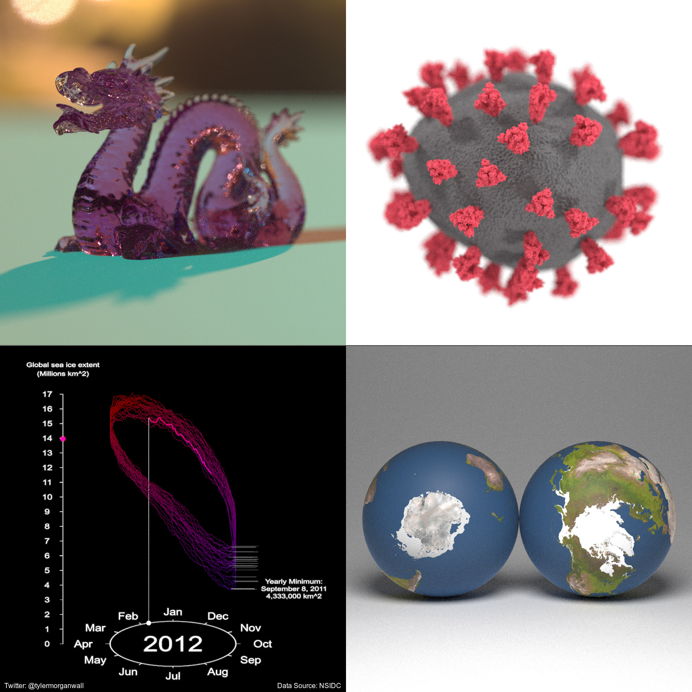
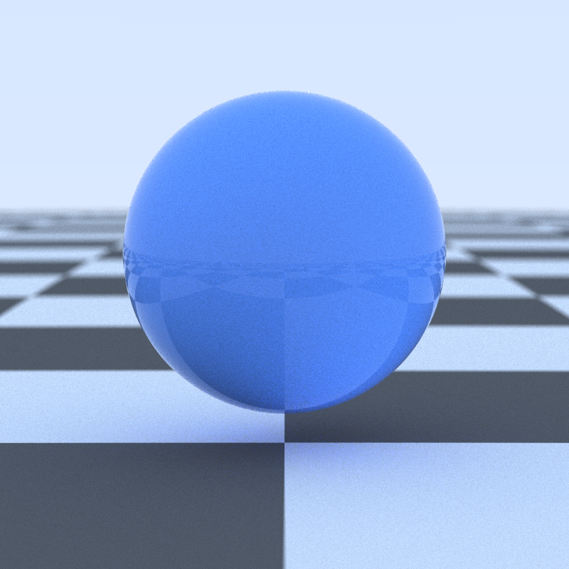
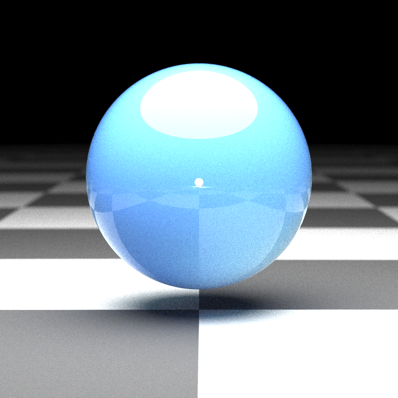
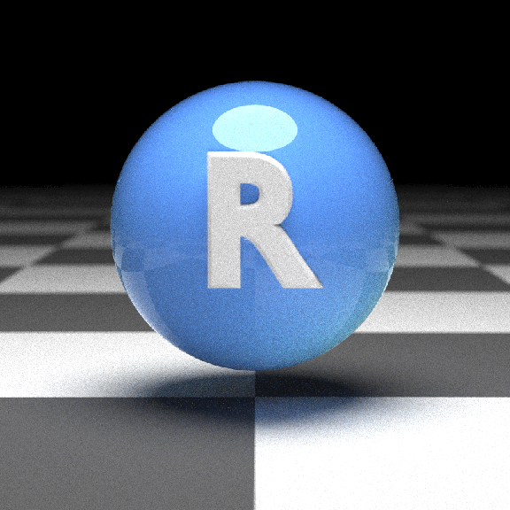
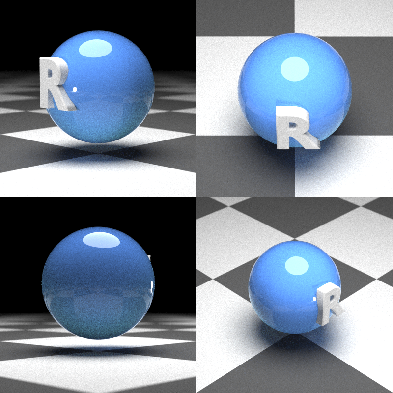
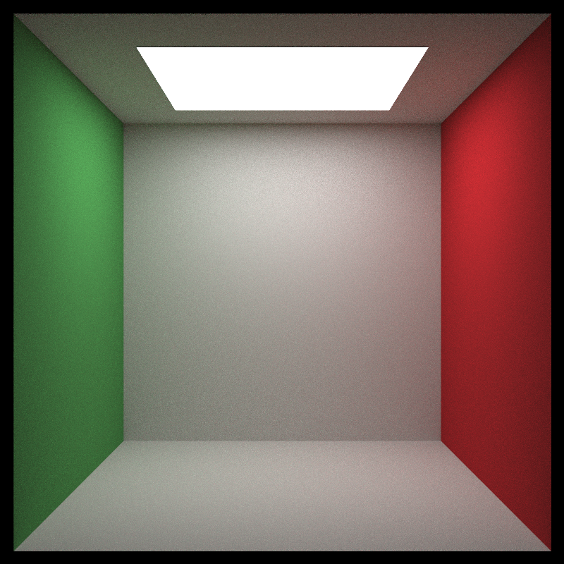
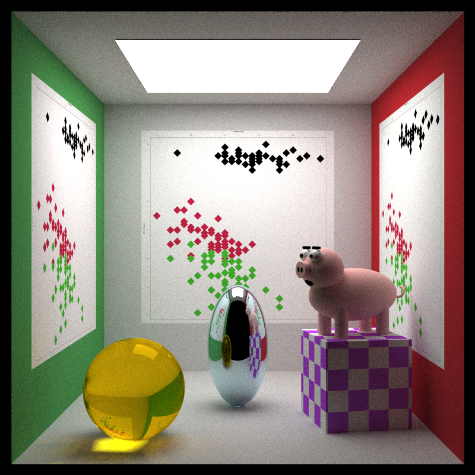
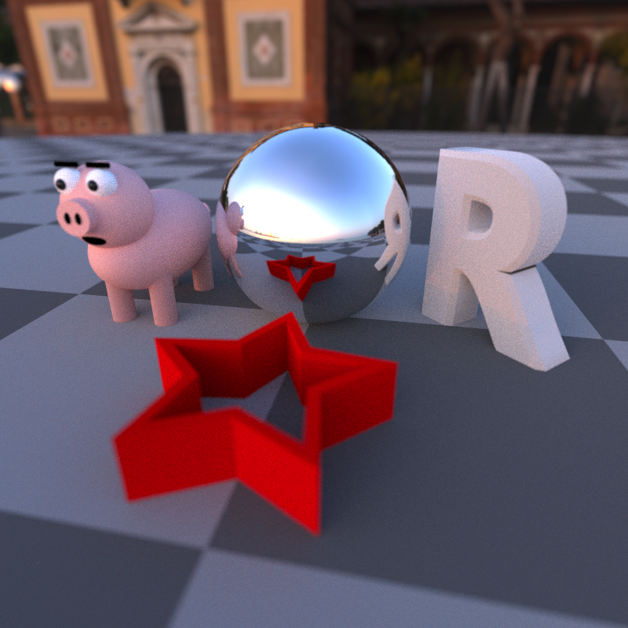

Overview
rayrender is an open source R package for raytracing scenes in created in R. Based off of Peter Shirley’s three books “Ray Tracing in One Weekend”, “Ray Tracing: The Next Week”, and “Ray Tracing: The Rest of Your Life”, this package provides a tidy R API to a raytracer built in C++ to render scenes built out of an array of primitives. rayrender builds scenes using a pipeable iterative interface, and supports diffuse, metallic, dielectric (glass), light emitting materials, as well as procedural and user-specified image textures and HDR environment lighting. rayrender includes multicore support (with progress bars) via RcppThread, random number generation via the PCG RNG, and .obj file support via TinyObjLoader.
Browse the documentation and see more examples at the website (if you aren’t already there):

Usage
We’ll first start by rendering a simple scene consisting of the ground, a sphere, and the included R.obj file. The location of the R.obj file can be accessed by calling the function r_obj(). First adding the ground using the render_ground() function. This renders an extremely large sphere that (at our scene’s scale) functions as a flat surface. We also add a simple red sphere to the scene.
library(rayrender)
scene = generate_ground() %>%
add_object(sphere(material = diffuse(color="#ff5555")))
render_scene(scene, parallel = TRUE, width = 800, height = 800, samples = 1000)
By default, a scene without any lights includes a blue sky. We can turn this off either by setting ambient_light = FALSE, or by adding a light to our scene. We will add an emissive sphere above and behind our camera.
scene = generate_ground() %>%
add_object(sphere(material = diffuse(color="#ff5555", sigma=100))) %>%
add_object(sphere(y=5, z = 5, x = 5, radius = 3,
material = light(intensity = 10)))
render_scene(scene, parallel = TRUE, width = 800, height = 800, samples = 1000)
Now we’ll add the (included) R .obj file into the scene, using the obj_model() function. We will scale it down slightly using the scale_obj argument, and then embed it on the surface of the ball. We’ll also turn down the light intensity.
scene = generate_ground() %>%
add_object(sphere(material = diffuse(color="#ff5555"))) %>%
add_object(obj_model(r_obj(), y = -0.4, z = 0.9, scale_obj = 0.6)) %>%
add_object(sphere(y=5, z = 5, x = 5, radius = 3,
material = light(intensity = 5)))
render_scene(scene, parallel = TRUE, width = 800, height = 800, samples = 1000)
Here we’ll render a grid of different viewpoints.
par(mfrow=c(2,2))
render_scene(scene, parallel = TRUE, width = 400, height = 400, lookfrom = c(7,1,7), samples = 1000)
render_scene(scene, parallel = TRUE, width = 400, height = 400, lookfrom = c(0,7,7), samples = 1000)
render_scene(scene, parallel = TRUE, width = 400, height = 400, lookfrom = c(-7,0,-7), samples = 1000)
render_scene(scene, parallel = TRUE, width = 400, height = 400, lookfrom = c(-7,7,7), samples = 1000)
Here’s another example: We start by generating an empty Cornell box and rendering it with render_scene(). Setting parallel = TRUE will utilize all available cores on your machine. The lookat, lookfrom, aperture, and fov arguments control the camera, and the samples argument controls how many samples to take at each pixel. Higher sample counts result in a less noisy image.
scene = generate_cornell()
render_scene(scene, lookfrom=c(278,278,-800),lookat = c(278,278,0), aperture=0, fov=40, samples = 1000,
ambient_light=FALSE, parallel=TRUE, width=800, height=800, clamp_value = 5)
Here we add a metal ellipsoid, a checkered purple cube, a colored glass sphere, a pig, and plaster the walls with the iris dataset using textures applied to rectangles. We first write the textures out to a temporary filename, and then read the image back in using the png::readPNG() function. We then pass this to the image argument in the diffuse material, which applies it as a texture.
tempfileplot = tempfile()
png(filename=tempfileplot,height=1600,width=1600)
plot(iris$Petal.Length,iris$Sepal.Width,col=iris$Species,pch=18,cex=12)
dev.off()image_array = png::readPNG(tempfileplot)
generate_cornell() %>%
add_object(ellipsoid(x=555/2,y=100,z=555/2,a=50,b=100,c=50, material = metal(color="lightblue"))) %>%
add_object(cube(x=100,y=130/2,z=200,xwidth = 130,ywidth=130,zwidth = 130,
material=diffuse(checkercolor="purple", checkerperiod = 30),angle=c(0,10,0))) %>%
add_object(pig(x=100,y=190,z=200,scale=40,angle=c(0,30,0))) %>%
add_object(sphere(x=420,y=555/8,z=100,radius=555/8,
material = dielectric(color="orange"))) %>%
add_object(yz_rect(x=0.01,y=300,z=555/2,zwidth=400,ywidth=400,
material = diffuse(image = image_array))) %>%
add_object(yz_rect(x=555/2,y=300,z=555-0.01,zwidth=400,ywidth=400,
material = diffuse(image = image_array),angle=c(0,90,0))) %>%
add_object(yz_rect(x=555-0.01,y=300,z=555/2,zwidth=400,ywidth=400,
material = diffuse(image = image_array),angle=c(0,180,0))) %>%
render_scene(lookfrom=c(278,278,-800),lookat = c(278,278,0), aperture=0, fov=40, samples = 1000,
ambient_light=FALSE, parallel=TRUE, width=800, height=800, clamp_value = 5)
Finally, rayrender supports environment lighting with the environment_light argument. Pass a high dynamic range image (.hdr) or a low-dynamic range image (.jpg,.png) and the image will be used to light the scene (along with any other lights). Here’s an example using an HDR image of Venice at sunset (obtained for free from hdrihaven.com), also using the Oren-Nayar diffuse model with sigma = 90 for a more realistic diffuse surface. We also add an extruded polygon star, using the extruded_polygon object.
tempfilehdr = tempfile(fileext = ".hdr")
download.file("https://www.tylermw.com/data/venice_sunset_2k.hdr",tempfilehdr)
#Create star polygon
angles = seq(0,360,by=36)
xx = rev(c(rep(c(1,0.5),5),1) * sinpi(angles/180))
yy = rev(c(rep(c(1,0.5),5),1) * cospi(angles/180))
star_polygon = data.frame(x=xx,y=yy)
hollow_star = rbind(star_polygon,0.8*star_polygon)
generate_ground(material = diffuse(color="grey20", checkercolor = "grey50",sigma=90)) %>%
add_object(sphere(material=metal())) %>%
add_object(obj_model(y=-1,x=-1.8,r_obj(), angle=c(0,135,0),material = diffuse(sigma=90))) %>%
add_object(pig(x=1.8,y=-1.2,scale=0.5,angle=c(0,90,0),diffuse_sigma = 90)) %>%
add_object(extruded_polygon(hollow_star,top=-0.5,bottom=-1, z=-2,
hole = nrow(star_polygon),
material=diffuse(color="red",sigma=90))) %>%
render_scene(parallel = TRUE, environment_light = tempfilehdr, width=800,height=800,
fov=70,clamp_value=10,samples=1000, aperture=0.1,
lookfrom=c(-0.9,1.2,-4.5),lookat=c(0,-1,0))